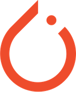

At present, I am pursuing a PhD in Artificial Intelligence (AI) with a particular interest on Machine Learning (ML) and its applications across diverse industries. The most recent project I have been working on involves the development of a data-driven methodology designed to improve the efficiency of mechanical simulations. Compared to traditional Finite Element Method (FEM) techniques, this approach has reduced simulation times from 20 minutes to 1-2 seconds. The results were achieved by employing an implicit strategy rather than dealing with high-dimensional meshes in 3D. [more]
• Proficient in using python libraries such as: pandas, trimesh, plotly, meshlab, Pytorch Geometric

• Proficient in deep learning frameworks such as PyTorch and TensorFlow, as well as scikit-learn for machine learning
• Experience with containerization technologies such as Docker and conda, and working with interactive computing environments such as Ipython and Jupyter Notebooks.
• Strong understanding of Object-Oriented Programming concepts and experience with languages such as Visual C#.Net, C++, MATLAB, and Python.
PhD Student: Artificial Intelligence Technical University of Chemnitz, Chemnitz, Germany
Supervised by:
Prof. Dr. Fred Hamker, Dr. Julien Vitay
Currently pursuing a PhD in the field of 3D deep learning, with a focus on geometric deformation using mesh autoencoders and implicit representations
M.Sc.: Mechatronics Engineering - K.N. Toosi University of Tech, Tehran, Iran
Thesis title:Implementation of Visual Servoing, Simultaneous Pose Estimation and Classification of Objects
B.Sc.: Computer Software Engineering IAU, South Branch, Tehran, Iran
Thesis title:Online Persian Handwriting Recognition
Machine Learning, Mesh autoencoders and 3D implicit representations
Partners: Fraunhofer IWU Dresden, Scale GmbH, TU Chemnitz (AI Faculty) .
in this project my tasks included:
• generating a benchmark dataset of 3D deformed shapes using FEM simulations
• developing a Reinforcement Learning environment to run RL algorithms
• using implicit representations to design a small and efficient neural network for processing large 3D meshes
• successful prediction of properties such as thickness and deviation of the reference mesh in 1D, 2D, and 3D based on process parameters interactively
• Published papers as the main author in the proceedings of the LSDyna-Forum and KI2022 conference [Code on Github].
Partners: Corant GmbH, TU Chemnitz.
Completed the first phase of a time series classification project using air particle sensor measurements to predict environmental events. Analyzed data and developed predictive models, contributing to project success.
Copyright © 2020 Resume Page, Design: Tooplate